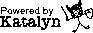

This page talks abouts the programming languages I've developed (to varying degrees of esotericism).
The Katalyn programming language is a powerful scripting language designed to pair the simplicity of Lua with the power of Perl. It integrates an intuitive syntax with a comprehensive, batteries-included standard library of useful functions. Whether you are writing console scripts, calling APIs or parsing text, Katalyn helps you get things done without getting in the way!
WebSCFL stands for Web Sectioned Command First Language. It's a programming language designed to make simple Prof. Dr. Style websites. This website used to be written and compiled using WebSCFL.
Polaris Twist is a refreshing stack-based, concatenative, interpreted programming language with strings as its only data type. It's a revision of my original Polaris, much faster and with Foreign Function Interface support. It has been designed to be small in size and minimal in language features. Written in C++98, so it can probably be compiled with any C++ compiler out there.
Nari (2023) is a new iteration of my Nari programming language. I develop it to relax, so I call Nari 'programming language programming as therapy'. Nari is inspired by Forth, or how I imagine Forth to be, as I've never written a single line of Forth. Nari is a weakly typed language. Its only data types are strings and integers. I don't know if it's fast or not (it probably isn't). I might expand it over time. I also might not.
Nari was also the guinea pig in the picture above (2012-2020).
A minimal, experimental stack-based, concatenative, interpreted programming language with strings as its only data type. Written in C++98, designed to run on Unix systems, backported to MS-DOS.
A COBOL-inspired programming language, designed to be expressive, readable, fast and easy to learn. Considered complete and in minimal evolution mode since LDPL 5. One of the best things I've ever made, for a number of reasons.
Webpage compiled on Sat Aug 31 03:17:49 -03 2024.
